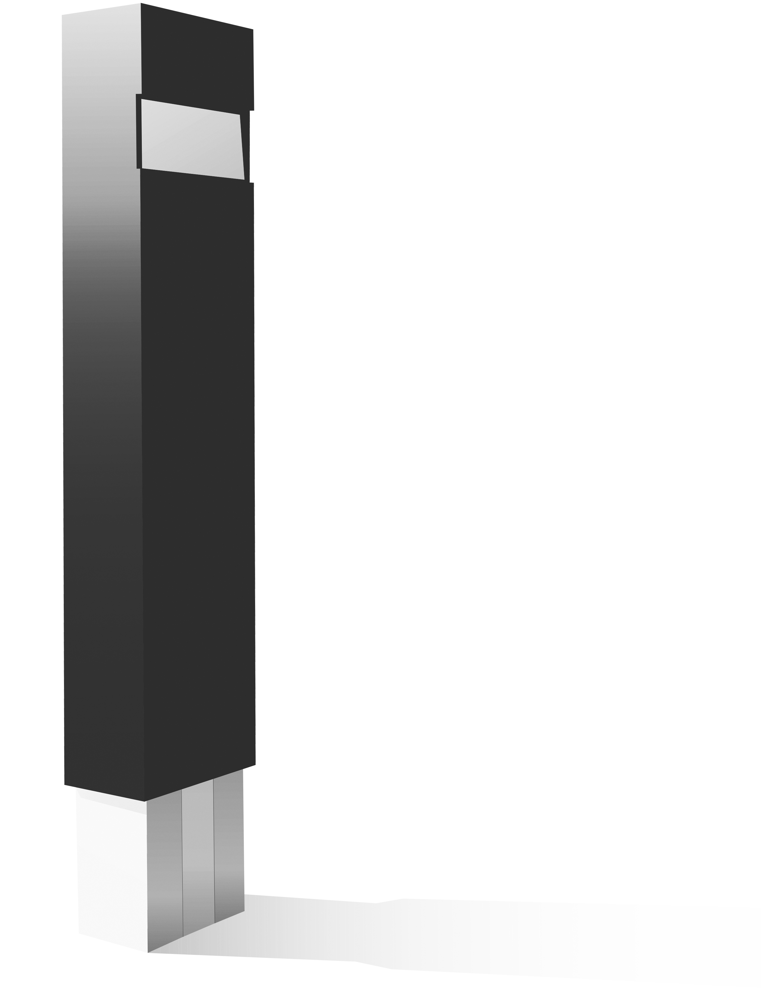

Stereoscopic.gif Photo Booth celebrates the ideas of special, temporary spaces, and participatory engagement by creating commemorative artifacts, records of “being there” for both the project
and the audience.
Touch a button and pose. Three synchronized cameras capture an image from slightly different angles and assemble an animated GIF. The GIF is published to our online gallery and optionally sent to your phone.
View the photo gallery ➔The photo booth is a project by Sam Stephenson and Bojan Radojcic created for the Re/View exhibition at Chicago Design Museum.
